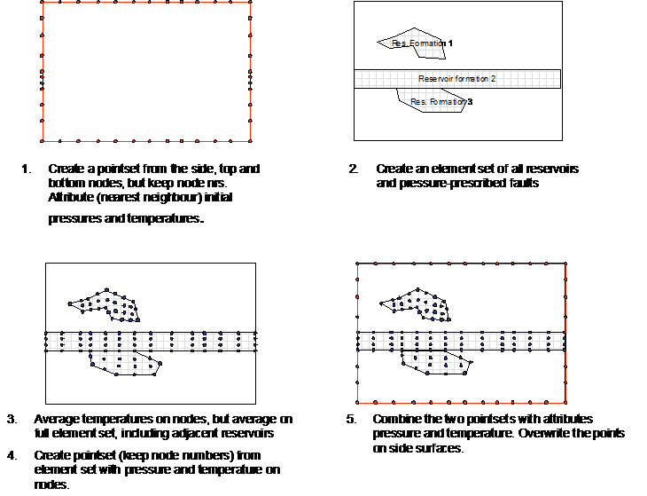

In a heat-flow analysis the temperature in over and underburden are calculated using the reservoir conditions and far-field temperatures as boundary conditions. This approach should result in more realistic temperature modeling in the formations located close to the reservoir, as input for a nonlinear stress-analysis.
You can run the transient heat-flow analysis by selecting Heat flow in the Analysis Menu.
In this analysis the following preconditions are made:
· The temperature in the reservoir will not affect the temperature on the boundary of the model. So be careful with running a heat flow analysis on a zoom-in model.
The temperature in reservoir and outer faces of the model are used as boundary conditions. First the formations which are reservoir will be identify. These formations contain at least one element with pore pressure change in depletion stages. Then a node group will be created consisting of all the nodes in reservoir formations and on the boundary model. There should be no duplicated nodes in this group. Duplicated nodes can occur in this node group when reservoir formations using the same surfaces/horizons or when reservoir formations cut trough the outer faces of the model. In this case the temperature/pressures can be not unique per node. The following procedure will be used to define the temperature and pore pressure in the nodes with non-unique values:
